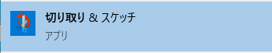
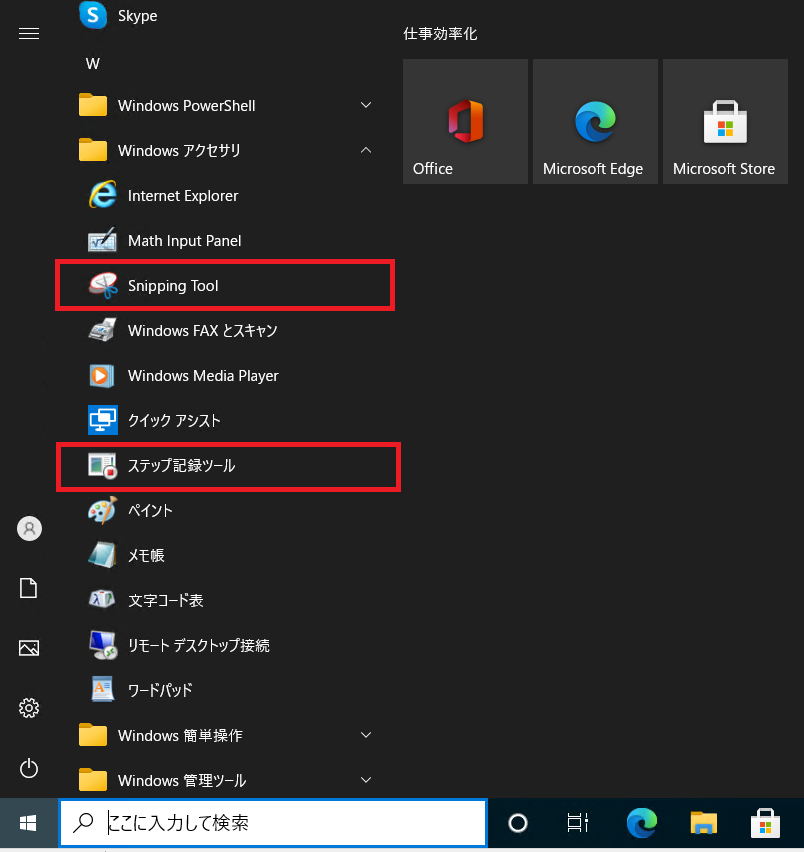
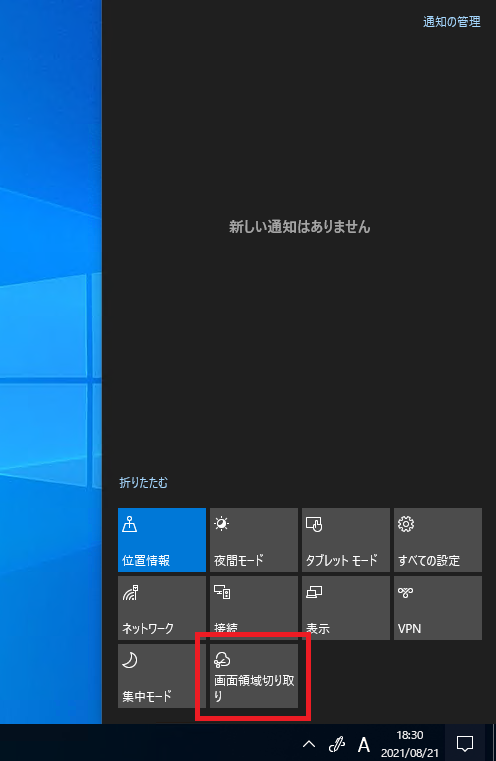
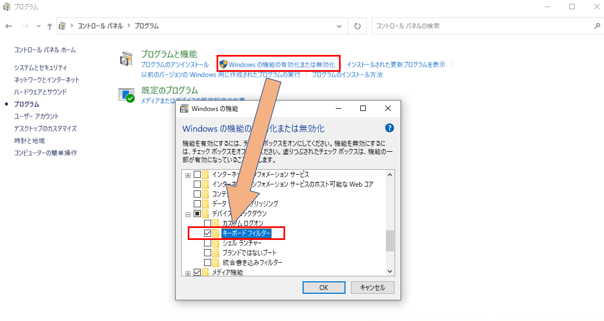
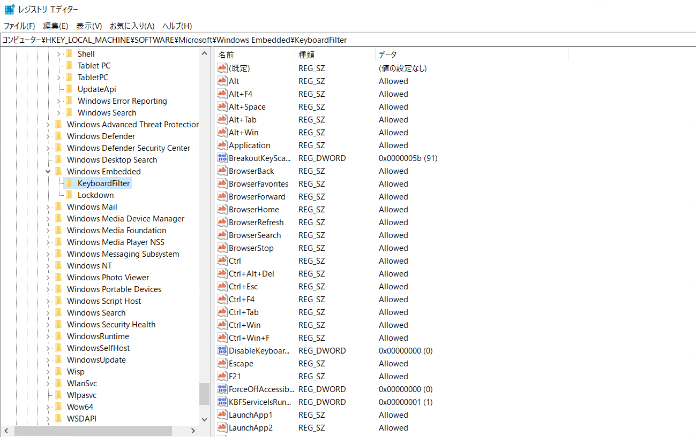
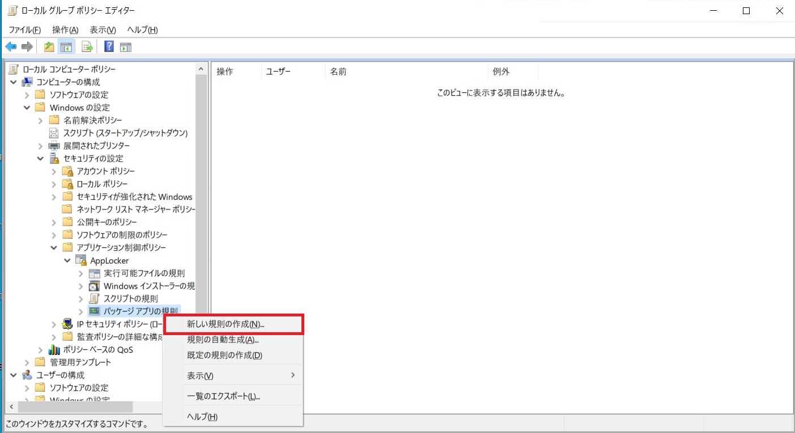
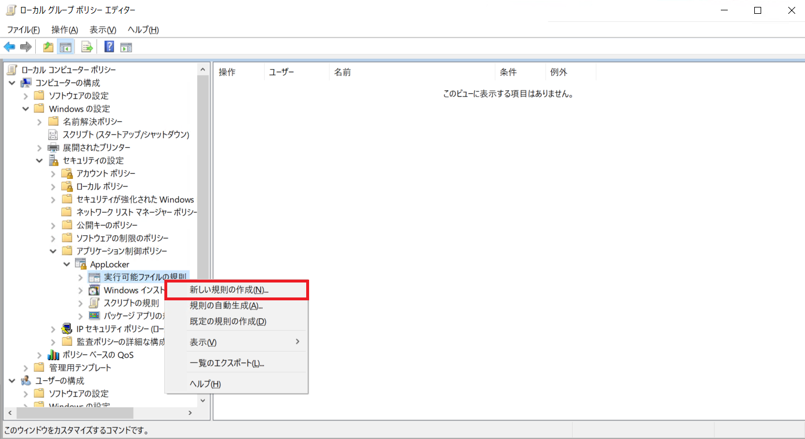
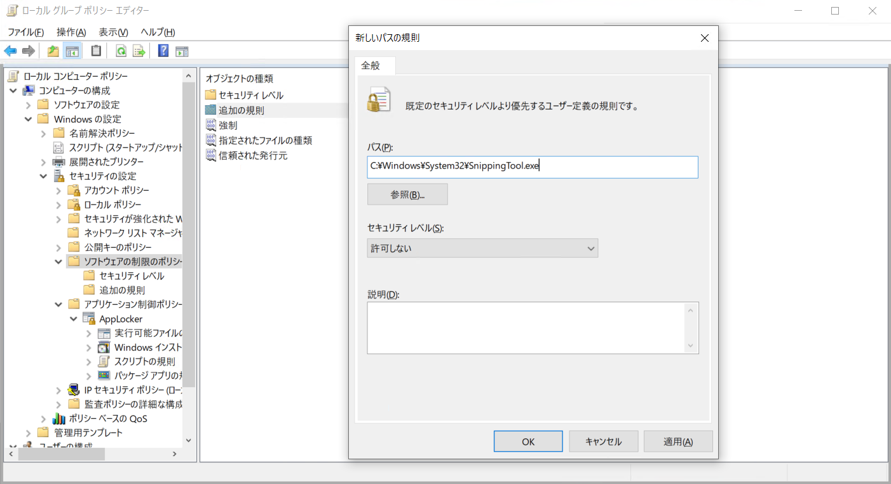

本記事はマイクロソフト社員によって公開されております。
こんにちは。Windows サポートチームの木村です。
Windows にはデフォルトで様々な方法で画面キャプチャー (スクリーンショット) を保存することができます。
これらの機能は便利な一方で、ユーザー様の業務のなかでは 「画面キャプチャーを取らせたくない」 という場合もあるかと存じます。
本記事では、そのようなお客様に向けて、OS 標準で画面キャプチャーを保存することができる機能と、それらを制御する方法をご紹介致します。
※ 本記事では OS に標準機能として搭載されている機能のみをご案内しております。
サード パーティー製のツールや Office 等、OS に標準で搭載されていない機能については言及致しません。
目次
- 画面キャプチャーの種類について
1. ショートカット キー
2. UWP アプリ
3. 実行ファイル (exe ファイル)
4. その他 - 画面キャプチャーを抑止する方法
- よくある質問
Q1. AppLocker で 「切り取り & スケッチ」 を抑止しても [Windows キー] + [Shift] + [S] で画面キャプチャーが保存できてしまいます。なぜでしょうか。
Q2. Windows 10 Pro ではショートカット キーを用いた画面キャプチャーを抑止できないのでしょうか。
Q3. アクション センター下部の [画面領域切り取り] だけを無効化する方法はありますか。 - 関連情報
画面キャプチャーの種類について
Windows で画面キャプチャーを行う機能としてはショートカット キーを使用する方法と、OS 標準のアプリを利用する方法があります。
更に、アプリは UWP アプリと、exe 形式の実行ファイルのパターンが存在します。
本項では、OS 標準で画面キャプチャーを保存することができる機能をご案内致します。
1. ショートカット キー
- [Windows キー] + [Shift] + [S]
- [PrtScr]
- [Alt] + [PrtScr]
- [Shift] + [PrtScr]
- [Windows キー] + [PrtScr]
- [Windows キー] + [F]
フィードバック Hub を開くためのショートカット キーです。
フィードバック Hub を起動する直前の画面キャプチャーを取得します。
※ 本機能で取得されるキャプチャーは弊社へのフィードバックの送信前に詳細情報として添付され、利用されるものです。
### 2. UWP アプリ - 「切り取り & スケッチ」 のアプリ
OS に標準でインストールされている UWP アプリです。

- Xbox Game Bar
本機能は画面キャプチャーではなく、画面の操作を動画として録画することができる UWP アプリです。
3. 実行ファイル (exe ファイル)
「Snipping Tool」 のアプリ
スタート メニューから [Windows アクセサリ] > [Snipping Tool] をクリックすることで起動することができます。
パス：C:\Windows\System32\SnippingTool.exeステップ記録ツール
スタート メニューから [Windows アクセサリ] > [ステップ記録ツール] をクリックすることで起動することができます。
本機能はマウスを クリックするごとに画面キャプチャーを取得するツールでございます。
Windows サポート チーム等でも本機能を利用しており、ご支援の際に本機能で情報の収集を依頼する場合がございます。
パス：C:\Windows\system32\psr.exe

4. その他
- アクションセンター下部にあるクイック アクセスの [画面領域切り取り] をクリックする

## 画面キャプチャーを抑止する方法 本項からは、上述しました画面キャプチャーを行う方法を抑止する方法をご案内致します。 ご案内致します方法は、キーボードのショートカット キーを制御する方法や、アプリの動作を制御する方法を UWP アプリ、exe 形式の実行ファイルなどのかたちにあわせたものになります。 ご利用者様の用途にあわせた項目を参照ください。
1. ショートカット キーによるキャプチャーを抑止する
Windows 10 Enterprise 版または Education 版にはキーボード フィルターという機能がございます。この機能は任意のキーまたはキーの組み合わせを押下する操作を行ったときに、そのキー入力を無効にすることができます。
この機能によってキーボード入力により画面キャプチャーを抑止することができます。
(参考) キーボード フィルター
https://docs.microsoft.com/ja-jp/windows-hardware/customize/enterprise/keyboardfilter
1-1. キーボード フィルターを利用する (Enterprise / Education Edition 限定)
キーボード フィルターを利用するためには以下の手順にて機能を有効にする必要がございます。
コントロール パネルから [プログラム] > [Windows の機能の有効化または無効化] をクリックします。
「Windows の機能」 というウィンドウが開いたら [デバイスのロックダウン] をクリックして、[キーボード フィルター] にチェックをいれて [OK] をクリックします。PC の再起動後にキーボード フィルターの機能が利用できるようになります。
再起動後、管理者権限で実行したコマンド プロンプトから以下の 2 つのコマンドを実行します。
sc config MsKeyboardfilter start=auto
sc start MsKeyboardFilter
キーボード フィルターを有効後、以下のハイブの中に存在するレジストリを編集します。
ハイブ : HKEY_LOCAL_MACHINE\SOFTWARE\Microsoft\Windows Embedded\KeyboardFilter
値の名前 : <それぞれのキーや、組み合わせが名前になります>
値の種類 : REG_SZ
値 : Allowed (有効にする) / blocked (無効にする)

たとえば Windows キーを無効化したい場合は [Windows] という名前のレジストリを blocked に変更します。
無効にしたキーの組み合わせが存在しない場合は上記のレジストリのフォーマットに従って作成することも可能です。
キーボードの組み合わせについては以下の公開情報を参考いただけますと幸いです。
(参考情報) あらかじめ定義されたキーの組み合わせ
https://docs.microsoft.com/ja-jp/windows-hardware/customize/enterprise/predefined-key-combinations
2. UWP アプリによるキャプチャーを抑止する
UWP アプリを抑止する方法としては、パッケージ単位で抑止をする方法がございます。
パッケージ単位でのアプリのブロック機能を提供する AppLocker は Enterprise もしくは Education Edition でしか利用できません。
その場合は、利用したくないアプリをアンインストールすることで機能を利用できなくするという方法を提案致します。
2-1. AppLocker を利用する (Enterprise / Education Edition 限定)
Windows 10 Enterprise 版または Education 版では AppLocker という機能を利用することができます。
この機能は UWP アプリをパッケージ単位で起動を抑止することが可能でございます。
- グループ ポリシー エディターを開きます。
- [コンピューターの構成] > [Windows の設定] > [セキュリティの設定] > [アプリケーション制御ポリシー] > [AppLocker] の順にクリックします。
- [パッケージ アプリの規則] を右クリックして [新しい規則の作成] をクリックします。
- [アクセス許可] の項目で [操作] を拒否に、[ユーザーまたはグループ] で、対象のアプリを利用させたくないユーザーまたはグループを選択します。
- [発行元] の項目で [インストール済みのパッケージ化されたアプリを参照として使用する] を選択して [選択] をクリックします。
- 「アプリケーションの選択」 のウィンドウで [切り取り & スケッチ] や [Xbox Game Bar] などの、利用させたくないアプリを選択して [OK] をクリックします。
- [作成] をクリックします。
- [パッケージ アプリの規則] を右クリックして [規則の規則の作成] をクリックします。

2-2. アプリのアンインストールを行う
切り取り & スケッチと Xbox Game Bar の 2 つの UWP アプリは OS 標準でインストールされています。
管理者権限で実行した PowerShell から以下にご案内するコマンドを実行することで、利用している環境の全てのユーザーからアプリをアンインストールできます。
あわせて Windows のアップグレードを行った際などに、削除したアプリが再インストールされてしまうことを防ぐことができます。
- 切り取り & スケッチをアンインストールするためのコマンド
Get-AppxProvisionedPackage -online | where displayname -like Microsoft.ScreenSketch | Remove-AppxProvisionedPackage -Online
Get-AppxPackage Microsoft.ScreenSketch | Remove-AppxPackage -AllUsers
- Xbox Game Bar をアンインストールするためのコマンド
Get-AppxProvisionedPackage -online | where displayname -like Microsoft.XboxGamingOverlay | Remove-AppxProvisionedPackage -Online
Get-AppxPackage Microsoft.XboxGamingOverlay | Remove-AppxPackage -AllUsers
※ これらのコマンドを実行したあとは、新規に作成されたユーザーと既存のユーザーの両方でアプリがアンインストールされ、利用できない状態となります。
3. 実行ファイル (exe ファイル) によるキャプチャーを抑止する
UWP アプリの項 でご案内致しましたAppLocker は実行ファイル単位でもアプリの起動を制限することができます。
前述のように、AppLocker は Enterprise もしくは Education Edition でしか利用することができないため、
Home や Pro Edition を利用されている場合は、「ソフトウェアの制限のポリシー」 という機能を利用します。
3-1. AppLocker を利用する
AppLocker で実行ファイル単位でアプリの起動を制限する場合は、本手順に従って設定を実施します。
- グループ ポリシー エディターを開きます。
- [コンピューターの構成] > [Windows の設定] > [セキュリティの設定] > [アプリケーション制御ポリシー] > [AppLocker] の順にクリックします。
- [実行可能ファイルの規則] を右クリックして [新しい規則の作成] をクリックします。
- [アクセス許可] の項目で [操作] を拒否に、[ユーザーまたはグループ] で「切り取り & スケッチ」 を利用させたくないユーザーまたはグループを選択します。
- [パス] を選択して [次へ] をクリックします。
- [パス] の項目に制御したい実行ファイルのフルパスを入力して [次へ] をクリックします。
- [作成] をクリックします。
- [既定の規則] が作成されることがありますが、削除する必要はありません。

3-2. ソフトウェアの制限のポリシーを利用する
Home や Pro Edition を利用されているユーザーの場合は AppLocker を利用いただくことができません。
そのため本項にてご案内致します [ソフトウェアの制限のポリシー] を利用してアプリの起動を制限します。
- グループ ポリシー エディターを開きます。
- [コンピューターの構成] > [Windowsの設定] > [セキュリティの設定] > [ソフトウェアの制限のポリシー] の順にクリックします。
- [ソフトウェアの制限のポリシー] を右クリックし、 [新しいソフトウェアの制限のポリシー] をクリックします。
- 「追加の規則」 を右クリックし [新しいパスの規則] をクリックします。
- 以下の設定を行い、 [OK] ボタンをクリックすることで、対象のアプリケーション起動を制限することが可能となります。
パス：抑止したいソフトウェアのフォルダー、または、実行ファイルを指定します。
セキュリティ レベル： “許可しない”
説明 : 任意の文字※空白でも問題ありません。
(例 : Snipping Tool を抑止するときの設定例)

よくある質問
Q1. AppLocker で 「切り取り & スケッチ」 を抑止しても [Windows キー] + [Shift] + [S] で画面キャプチャーが保存できてしまいます。なぜでしょうか。
キーボードによる画面キャプチャーは 「切り取り & スケッチ」 や 「Snipping Tool」 を起動しているのではなく、OS の機能を用いての画面キャプチャーでございます。
そのためアプリの無効や削除を行っても、キーボードによる画面キャプチャーを抑止することはできません。
Q2. Windows 10 Pro ではショートカット キーを用いた画面キャプチャーを抑止できないのでしょうか。
弊社にて推奨する方法では Pro Edition でショートカット キーを用いた画面キャプチャーを抑止する方法はございません。
Q3. アクション センター下部の [画面領域切り取り] だけを無効化する方法はありますか。
OS 標準の方法では [画面領域切り取り] だけを無効化する方法はございません。
参考情報
- AppLocker とは
https://docs.microsoft.com/ja-jp/windows/security/threat-protection/windows-defender-application-control/applocker/what-is-applocker - キーボード フィルター
https://docs.microsoft.com/ja-jp/windows-hardware/customize/enterprise/keyboardfilter
本情報が少しでもご利用者様の運用の一助となりますと幸いでございます。
※本記事につきましては予告なく内容が変更される場合がございますことをご了承ください。